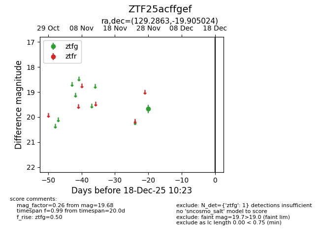
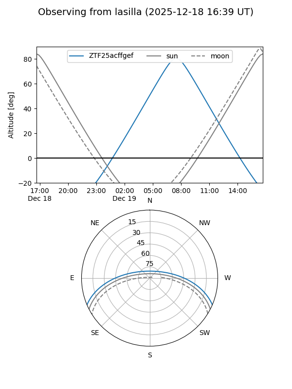
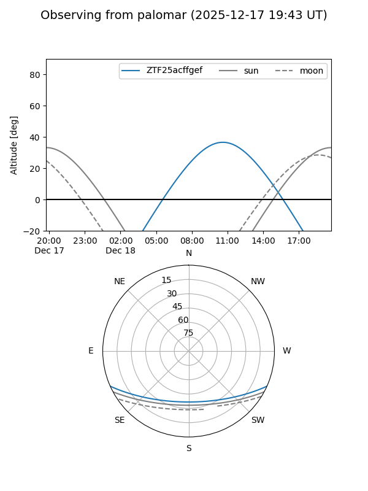

ZTF25acffgef
Target ZTF25acffgef at 2025-12-18 11:17
Aliases and brokers:
FINK: fink-portal.org/ZTF25acffgef
Lasair: lasair-ztf.lsst.ac.uk/objects/ZTF25acffgef
ALeRCE: alerce.online/object/ZTF25acffgef
alt names
ZTF25acffgef (ztf,fink_ztf)
Coordinates:
equatorial (ra, dec) = 129.2863,-19.90502
equatorial (HMS+DMS) = 08:37:08.70,-19:54:18.09
galactic (l, b) = (243.3228,+12.54371)
Photometry
last ztfg=19.68
1 ztfg detections
Lightcurve

Visibility


Additional plots